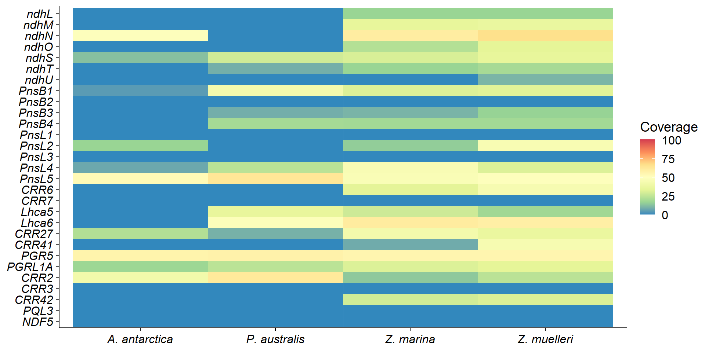

Visualising gene differences based on read alignments
Philipp Bayer
21 February 2022
Last updated: 2022-02-21
Checks: 7 0
Knit directory: Amphibolis_Posidonia_Comparison/
This reproducible R Markdown analysis was created with workflowr (version 1.6.2). The Checks tab describes the reproducibility checks that were applied when the results were created. The Past versions tab lists the development history.
Great! Since the R Markdown file has been committed to the Git repository, you know the exact version of the code that produced these results.
Great job! The global environment was empty. Objects defined in the global environment can affect the analysis in your R Markdown file in unknown ways. For reproduciblity it’s best to always run the code in an empty environment.
The command set.seed(20210414) was run prior to running the code in the R Markdown file. Setting a seed ensures that any results that rely on randomness, e.g. subsampling or permutations, are reproducible.
Great job! Recording the operating system, R version, and package versions is critical for reproducibility.
Nice! There were no cached chunks for this analysis, so you can be confident that you successfully produced the results during this run.
Great job! Using relative paths to the files within your workflowr project makes it easier to run your code on other machines.
Great! You are using Git for version control. Tracking code development and connecting the code version to the results is critical for reproducibility.
The results in this page were generated with repository version a794820. See the Past versions tab to see a history of the changes made to the R Markdown and HTML files.
Note that you need to be careful to ensure that all relevant files for the analysis have been committed to Git prior to generating the results (you can use wflow_publish or wflow_git_commit). workflowr only checks the R Markdown file, but you know if there are other scripts or data files that it depends on. Below is the status of the Git repository when the results were generated:
Ignored files:
Ignored: .Rhistory
Ignored: .Rproj.user/
Ignored: analysis/OTT.nb.html
Ignored: analysis/plotGenes.nb.html
Ignored: analysis/plotRgenes.nb.html
Unstaged changes:
Modified: analysis/GOenrichment.Rmd
Modified: analysis/Orthofinder.Rmd
Note that any generated files, e.g. HTML, png, CSS, etc., are not included in this status report because it is ok for generated content to have uncommitted changes.
These are the previous versions of the repository in which changes were made to the R Markdown (analysis/GeneLossComparisonReads.Rmd) and HTML (docs/GeneLossComparisonReads.html) files. If you’ve configured a remote Git repository (see ?wflow_git_remote), click on the hyperlinks in the table below to view the files as they were in that past version.
| File | Version | Author | Date | Message |
|---|---|---|---|---|
| Rmd | a794820 | Philipp Bayer | 2022-02-21 | New analysis yay |
Here I compare read alignment differences with known Arabidopsis genes.
library(tidyverse)Warning: package 'tidyverse' was built under R version 4.1.1-- Attaching packages --------------------------------------- tidyverse 1.3.1 --v ggplot2 3.3.5 v purrr 0.3.4
v tibble 3.1.5 v dplyr 1.0.7
v tidyr 1.1.4 v stringr 1.4.0
v readr 2.0.2 v forcats 0.5.1Warning: package 'ggplot2' was built under R version 4.1.1Warning: package 'tibble' was built under R version 4.1.1Warning: package 'tidyr' was built under R version 4.1.1Warning: package 'readr' was built under R version 4.1.1Warning: package 'purrr' was built under R version 4.1.1Warning: package 'dplyr' was built under R version 4.1.1Warning: package 'stringr' was built under R version 4.1.1Warning: package 'forcats' was built under R version 4.1.1-- Conflicts ------------------------------------------ tidyverse_conflicts() --
x dplyr::filter() masks stats::filter()
x dplyr::lag() masks stats::lag()library(cowplot)Warning: package 'cowplot' was built under R version 4.1.1theme_set(theme_cowplot())
library(RColorBrewer)Warning: package 'RColorBrewer' was built under R version 4.1.1library(wesanderson)Warning: package 'wesanderson' was built under R version 4.1.1library(gghighlight)Warning: package 'gghighlight' was built under R version 4.1.2library(patchwork)Warning: package 'patchwork' was built under R version 4.1.1
Attaching package: 'patchwork'The following object is masked from 'package:cowplot':
align_plotsknitr::opts_knit$set(root.dir = rprojroot::find_rstudio_root_file())The data is based on Supplementary Table S6 and S7.
Stomata genes
stomata <- tibble::tribble(
~Gene.symbol, ~A..antarctica, ~P..australis, ~H..ovalis, ~Z..muelleri, ~Z..marina,
"SBT1.2", 0, 0, 5.63, 8.2, 4.34,
"EPFL9", 0, 0, 0, 0, 0,
"EPF1", 0, 25.08, 0, 0, 0,
"TMM", 3.35, 0, 0, 0, 0,
"EPF2", 0, 0, 0, 0, 0,
"MYB88", 0, 0, 6.74, 2.34, 0,
"MUTE", 0, 0, 0, 0, 0,
"SPCH", 7.95, 3.29, 5.84, 4.47, 0,
"FAMA", 6.99, 20.64, 6.83, 4.98, 4.98,
"SCRM2", 21.8, 25.57, 19.66, 26.16, 22.25,
"FLP", 3.2, 8.77, 4.42, 0, 0
)stomata_long <- stomata %>% pivot_longer(-Gene.symbol, values_to = 'Coverage', names_to='Species') %>%
mutate(Species = gsub('\\.\\.', '. ', Species))stom_p <- stomata_long %>% ggplot(aes(x=forcats::fct_rev(Species), y=Coverage, fill=Species, color=Species)) +
geom_boxplot(
aes(fill = after_scale(colorspace::lighten(fill, .9))),
size = 1.5, outlier.shape = NA
) +
geom_jitter(width = .1, size = 4, alpha = .5) +
ylim(c(-1,100)) +
theme(legend.position = "None",
axis.text.y = element_text(face = "italic")) +
scale_color_brewer(palette='Dark2') +
ylab('Coverage (%)') +
coord_flip() + xlab('Species')
stom_pEthylene
ethylene <- tibble::tribble(
~Gene.symbol, ~A..antarctica, ~P..australis, ~H..ovalis, ~Z..muelleri, ~Z..marina,
"ACO1", 0, 53.16, 0, 0, 0,
"ACO2", 0, 11.53, 0, 0, 0,
"ACO4", 0, 15.74, 0, 0, 0,
"ACO5", 0, 0, 0, 6.39, 5.3,
"ACS1", 9.34, 5.11, 0, 0, 0,
"ACS2", 7.24, 5.97, 0, 4.43, 0,
"ACS4", 18.74, 25.19, 0, 8.49, 8.21,
"ACS5", 19.25, 50.39, 4.46, 0, 0,
"ACS6", 0, 0, 0, 0, 0,
"ACS7", 10.27, 66.29, 0, 6.47, 0,
"ACS8", 38.58, 42.62, 6.24, 0, 0,
"ACS9", 20.52, 36.94, 0, 0, 0,
"ACS11", 0, 22.05, 7.45, 0, 0,
"ERS1", 35.23, 40.88, 0, 2.5, 0,
"ETR1/EIN1", 49.57, 51.87, 0, 3.83, 0,
"ETR2", 0, 21.96, 0, 0, 0,
"EIN4", 1.74, 31.33, 0, 0, 1.78,
"CTR1", 26.68, 31.55, 5.96, 0, 0,
"EIN2", 0, 14.54, 11.12, 0, 0,
"EBF1", 0, 0, 4.5, 0, 0,
"EBF2", 0, 12.45, 4.22, 0, 0,
"EIN3", 27.03, 43.08, 36.83, 31.27, 31.11,
"MYC2", 4.43, 27.83, 10.31, 23.61, 23.5,
"MYC3", 19, 17.14, 10.06, 12.14, 13.77,
"MYC4", 0, 3.84, 8.19, 20.96, 11.75
)ethylene_long <- ethylene %>% pivot_longer(-Gene.symbol, values_to = 'Coverage', names_to='Species') %>%
mutate(Species = gsub('\\.\\.', '. ', Species))eth_p <- ethylene_long %>% ggplot(aes(x=forcats::fct_rev(Species), y=Coverage, fill=Species, color=Species)) +
geom_boxplot(
aes(fill = after_scale(colorspace::lighten(fill, .9))),
size = 1.5, outlier.shape = NA
) +
geom_jitter(width = .1, size = 4, alpha = .5) +
ylim(c(-1,100)) +
theme(legend.position = "None",
axis.text.y = element_text(face = "italic")) +
scale_color_brewer(palette='Dark2') +
ylab('Coverage (%)') +
coord_flip() +
xlab('Species')
eth_p # NDH genes
# NDH genes
ndh <- tibble::tribble(
~Gene.symbol, ~A..antarctica, ~P..australis, ~H..ovalis, ~Z..muelleri, ~Z..marina,
"NDHL", 0, 0, 0, 16.67, 16.67,
"NDHM", 0, 0, 0, 36.24, 34.4,
"NDHN", 48.73, 0, 0, 66.35, 59.68,
"NDHO", 0, 0, 0, 33.54, 22.22,
"NDHS", 12.35, 28.29, 0, 34.4, 30.15,
"NDHT", 0, 8.67, 0, 19.47, 16.67,
"NDHU", 0, 0, 0, 9.89, 0,
"PNSB1", 4.26, 42.42, 0, 32.4, 31.24,
"PNSB2", 0, 0, 0, 0, 0,
"PNSB3", 0, 8.46, 0, 16.26, 9.76,
"PNSB4", 0, 19.13, 0, 18.75, 18.75,
"PNSL1", 0, 0, 0, 0, 0,
"PNSL2", 16.58, 0, 0, 45.03, 15.01,
"PNSL3", 0, 0, 0, 0, 0,
"PNSL4", 7.19, 23.55, 0, 31.04, 45.11,
"PNSL5", 52.82, 62.82, 57.31, 48.72, 46.28,
"CRR6", 0, 0, 0, 43.86, 33.06,
"CRR7", 0, 0, 0, 0, 0,
"Lhca5", 0, 35.15, 0, 18.29, 27.76,
"Lhca6", 0, 47.85, 0, 58.43, 60.27,
"CRR27", 21.9, 9.2, 9.26, 36.38, 41.78,
"CRR41", 0, 0, 0, 44.03, 7.86,
"PGR5", 55.97, 56.72, 53.98, 55.22, 55.22,
"PGRL1A", 17.54, 23.79, 29.54, 33.54, 31.08,
"CRR2", 41.49, 61.4, 2.94, 23.51, 13.93,
"CRR3", 0, 0, 0, 0, 0,
"CRR42", 0, 0, 0, 30.89, 28.44,
"PQL3", 0, 0, 0, 0, 0,
"NDF5", 0, 0, 0, 0, 0
)ndh_long <- ndh %>% pivot_longer(-Gene.symbol, values_to = 'Coverage', names_to='Species') %>%
mutate(Species = gsub('\\.\\.', '. ', Species))ndh_p <- ndh_long %>% ggplot(aes(x=forcats::fct_rev(Species), y=Coverage, fill=Species, color=Species)) +
geom_boxplot(
aes( fill = after_scale(colorspace::lighten(fill, .9))),
size = 1.5, outlier.shape = NA
) +
geom_jitter(width = .1, size = 4, alpha = .5) +
ylim(c(-1,100)) +
theme(legend.position = "None",
axis.text.y = element_text(face = "italic")) +
scale_color_brewer(palette='Dark2') +
ylab('Coverage %') +
coord_flip() +
xlab('Species')
ndh_p
The following data is slightly different because it compares lengths of annotated genes in the chloroplast assembly.
ndh_chloro <- tibble::tribble(
~Gene.symbol, ~A..antarctica, ~H..ovalis, ~P..australis, ~Z..marina, ~Z..muelleri,
"ndhA", 0, 0, 0, 101.8, 101.4,
"ndhB", 0, 0, 0, 100.4, 100.9,
"ndhB-2", 0, 0, 0, 100.4, 100.9,
"ndhC", 92.5, 0, 100, 100, 100,
"ndhD", 29.4, 0, 0, 100, 100,
"ndhE", 0, 0, 45.4, 100, 100,
"ndhF", 0, 0, 0, 98.4, 98.3,
"ndhG", 45.9, 0, 0, 100, 100,
"ndhH", 34, 63.1, 63.8, 100, 100,
"ndhI", 0, 0, 0, 110.5, 110.5,
"ndhJ", 70.8, 0, 0, 100, 100,
"ndhK", 55, 0, 109.3, 109.8, 109.8
)ndh_chl_long <- ndh_chloro %>% pivot_longer(-Gene.symbol, values_to = 'Coverage', names_to='Species') %>%
mutate(Species = gsub('\\.\\.', '. ', Species))Stylistic choice - if the new gene is longer than the Arabidopsis one, set to 100%.
ndh_chl_p <- ndh_chl_long %>%
mutate(Coverage = case_when(Coverage > 100 ~ 100,
TRUE ~ Coverage)) %>%
ggplot(aes(x=forcats::fct_rev(Species), y=Coverage, fill=Species, color=Species)) +
geom_boxplot(
aes( fill = after_scale(colorspace::lighten(fill, .9))),
size = 1.5, outlier.shape = NA
) +
geom_jitter(width = .1, size = 4, alpha = .5) +
ylim(c(-1,100.1)) +
theme(legend.position = "None",
axis.text.y = element_text(face = "italic")) +
scale_color_brewer(palette='Dark2') +
ylab('Gene size difference (%)') +
xlab('Species') +
coord_flip()
ndh_chl_p
all together
patchwork <- (eth_p + stom_p) / (ndh_p + ndh_chl_p)
# patchwork[[2]] = patchwork[[2]] + theme(axis.text.y = element_blank(),
# axis.ticks.y = element_blank(),
# axis.title.y = element_blank() )
# patchwork[[1]] = patchwork[[1]] + theme(axis.text.y = element_blank(),
# axis.ticks.y = element_blank(),
# axis.title.y = element_blank() )
patchwork+ plot_annotation(tag_levels = "A")
sessionInfo()R version 4.1.0 (2021-05-18)
Platform: x86_64-w64-mingw32/x64 (64-bit)
Running under: Windows 10 x64 (build 19042)
Matrix products: default
locale:
[1] LC_COLLATE=English_Australia.1252 LC_CTYPE=English_Australia.1252
[3] LC_MONETARY=English_Australia.1252 LC_NUMERIC=C
[5] LC_TIME=English_Australia.1252
attached base packages:
[1] stats graphics grDevices utils datasets methods base
other attached packages:
[1] patchwork_1.1.1 gghighlight_0.3.2 wesanderson_0.3.6 RColorBrewer_1.1-2
[5] cowplot_1.1.1 forcats_0.5.1 stringr_1.4.0 dplyr_1.0.7
[9] purrr_0.3.4 readr_2.0.2 tidyr_1.1.4 tibble_3.1.5
[13] ggplot2_3.3.5 tidyverse_1.3.1 workflowr_1.6.2
loaded via a namespace (and not attached):
[1] Rcpp_1.0.7 lubridate_1.8.0 assertthat_0.2.1 rprojroot_2.0.2
[5] digest_0.6.28 utf8_1.2.2 R6_2.5.1 cellranger_1.1.0
[9] backports_1.2.1 reprex_2.0.1 evaluate_0.14 highr_0.9
[13] httr_1.4.2 pillar_1.6.4 rlang_0.4.12 readxl_1.3.1
[17] rstudioapi_0.13 whisker_0.4 jquerylib_0.1.4 rmarkdown_2.11
[21] labeling_0.4.2 munsell_0.5.0 broom_0.7.9 compiler_4.1.0
[25] httpuv_1.6.3 modelr_0.1.8 xfun_0.27 pkgconfig_2.0.3
[29] htmltools_0.5.2 tidyselect_1.1.1 fansi_0.5.0 crayon_1.4.1
[33] tzdb_0.1.2 dbplyr_2.1.1 withr_2.4.2 later_1.3.0
[37] grid_4.1.0 jsonlite_1.7.2 gtable_0.3.0 lifecycle_1.0.1
[41] DBI_1.1.1 git2r_0.28.0 magrittr_2.0.1 scales_1.1.1
[45] cli_3.0.1 stringi_1.7.5 farver_2.1.0 fs_1.5.0
[49] promises_1.2.0.1 xml2_1.3.2 bslib_0.3.1 ellipsis_0.3.2
[53] generics_0.1.1 vctrs_0.3.8 tools_4.1.0 glue_1.4.2
[57] hms_1.1.1 fastmap_1.1.0 yaml_2.2.1 colorspace_2.0-2
[61] rvest_1.0.2 knitr_1.36 haven_2.4.3 sass_0.4.0